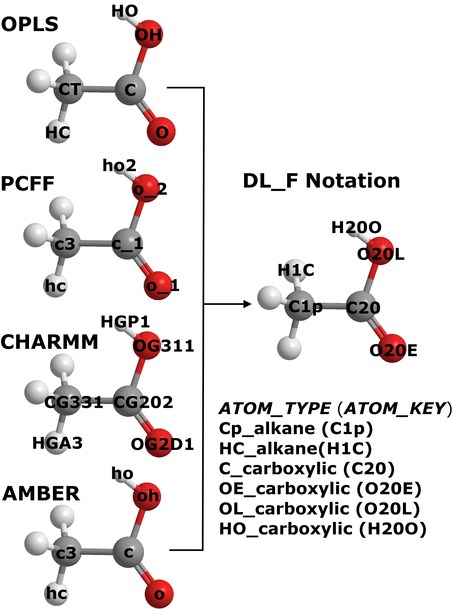

Force field conversion¶
This page provides a summary the concept and how DL_FIELD converts your system and setup the FF models. Please read Jargons if you have not done.
Atom typing
Procedures to determine the ATOM_TYPE of an atom that is referenced to an ATOM_KEY. From such, force field parameters for the atom that involves in a given set of interaction will be selected.
{kind=link}
The diagram shows the ATOM_KEYs for four different FF schemes for ethanoic acid: OPLS, PCFF, CHARMM CGenFF and AMBER. These ATOM_KEY symbols are expressed in the standard FF notations specific to the FF schemes. They are determined based on the user’s input configuration file by using one of the conversion mechanisms (see below) contained within DL_FIELD. To search for appropriate FF parameters, DL_FIELD will look through the .par library file in the lib/ directory. For example, to assign the angle potential for PCFF about the hydroxyl oxygen (ho2 - o_2 - c_1), DL_FIELD will look into the DLPOLY_PCFF.par file for the matching ATOM_KEYs. However, if a udff file is also available, then DL_FIELD will search for the matching parameters in the udff file before proceeds to the library file.
Note that these ATOM_KEYs appear to be very different among the different FF schemes. For example, for the hydroxyl oxygen atom, CHARMM assign the ATOM_KEY label as OG311, whereas, AMBER shows the atom as oh. However, DL_FIELD allows user to express the ATOM_KEYS in DL_F Notation. In this case, irrespective of which FF scheme, the ATOM_KEYs appear the same and yet the potential parameters will be different depend on the chosen FF schemes.
In DL_F Notation, each ATOM_KEY is also uniquely referenced to the ATOM_TYPE. Note that the chemical identity of each atom is also encoded in the Notation. For example, the ATOM_TYPE Cp_alkane refers to the ATOM_KEY C1p, where the numerical value 1 is the unique identity that refers to the alkane group. It turns out the C1p is actually a primary alkyl carbon atom.
You can choose to express the ATOM_KEYs in either the standard FF or the DL_F notations from the DL_FIELD control file. For more information about DL_F Notation, please click here.

Conversion mechanisms
To convert a system model into DL_POLY files, DL_FIELD contains two atom typing methods: (1) template-based and (2) molecular topology analysis. The characteristics for both methods are shown below:
- Template-based
- Matching of molecular input structures against some pre-defined MOLECULE templates. ATOM_TYPEs are directly obtained from the template.
- If the template is not available, users are required to contruct it manually in a udff file.
- Flexible, allows users to adjust the model behaviour - introduce constrains, rigid body, core-shell, pseudo points, etc.
- Possible use of the auto-CONNECT feature to simplify the MOLECULE template construction. Useful for complex molecules.
- Suitable for structures in PDB format.
- May be able to use ATOM_TYPEs in DL_F Notation in MOLECULE template. In this way, ATOM_KEYs in DL_F Notation can be produced.
- Molecular topology analysis
- Do not need the MOLECULE template.
- ATOM_TYPEs are automatically determined by carrying out detailed analysis of atomic structures.
- Can make use of the DL_F Notation and determine the chemical nature of every atom in the system.
- Suitable for xyz and mol2 file formats.
DL_FIELD will use one or both mechanisms to carry out FF conversions, depending on the type of FF schemes and type of input file format. DL_FIELD can use template-based conversion for all FF schemes. However, molecular topology analysis is only applicable to OPLS2005, PCFF and CVFF schemes.